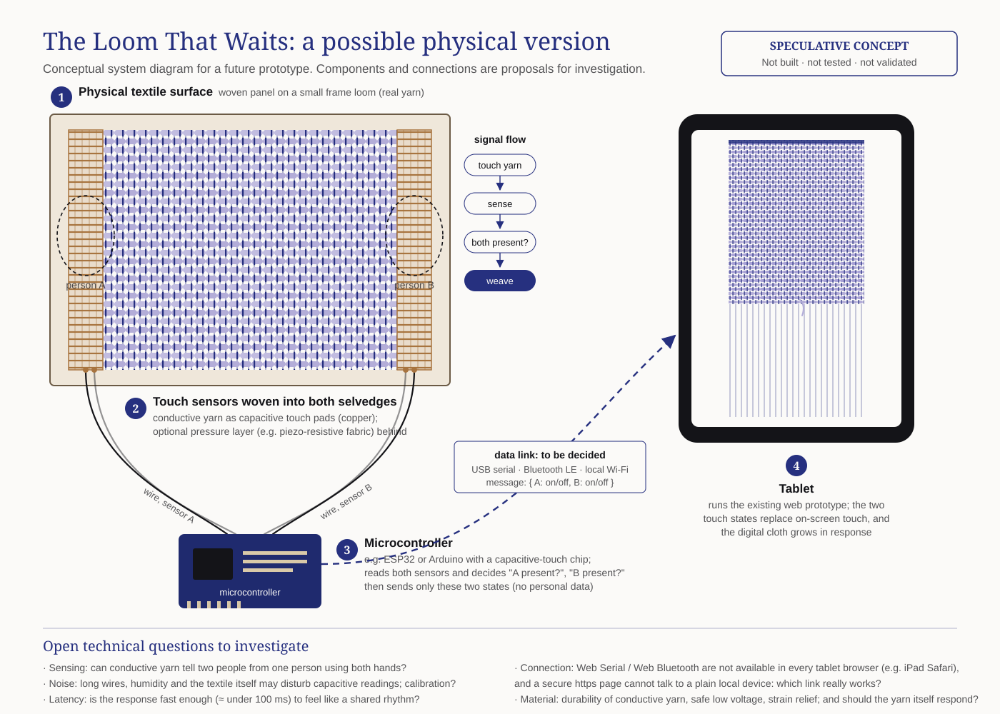

The Loom That Waits
Speculative HCI · Research through Design · 2026
A digital loom that weaves only while two people touch it together.
Mechanical looms made weaving possible without weavers. This one reverses that logic: it depends on two people being present at the same time. Each encounter leaves a trace in one shared, evolving cloth.
Research question
How can an interactive artefact make interpersonal coordination and co-presence perceptible through shared touch and textile materiality, without explicitly directing participants' behaviour?
How it behaves
- One touch: the threads respond. Nothing is woven.
- Two touches: light travels in, and weaving begins.
- Release: the cloth remains, with a loose end.
Functional digital prototype for tablet. No instructions on screen; no data about people is kept.


Questions it raises
- Does simultaneous touch create coordination, or only satisfy a technical condition?
- Can digital threads carry the material qualities of textiles?
- Can an artefact invite togetherness without social pressure?
- What does it mean for a system to keep traces of shared encounters?
- How can it remember an interaction without recording identities?
- Who is excluded when interaction needs two simultaneous touches?
Reflection
An exploratory artefact, not a validated solution. It makes no claim to create belonging. It opens tensions between individual and shared action, presence and absence, participation and autonomy. It trusts touch, not identity: one person with two hands can weave alone.
Next
A physical loom with sensors woven into real yarn. A collective installation in which a day of encounters forms one cloth.
